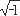

|
где Um = Um ejYu - комплексная амплитуда напряжения, не зависящая от времени (t = 0); j = = ejp /2 - мнимая единица; Um и Yu - модуль и аргумент комплексной амплитуды напряжения Um при t = 0; ωt + Yu - аргумент комплекса амплитуды напряжения при t ≠ 0. Отметим, что модулем комплексной амплитуды напряжения является амплитуда Um, а аргументом - начальная фаза Yu синусоидального напряжения u(t). Итак, вектор амплитуды напряжения, вращающийся с частотой ω против хода часовой стрелки в комплексной плоскости Re-Im (рис. 3.9, б), состоит из комплексной амплитуды Um = Um ejYu , не зависящей от времени, и множителя ejωt; причем умножение вектора Um на множитель ejωt означает его поворот на угол ωt в положительном направлении (рис. 3.8, б), в то время как при его умножении на множитель e-jωt вектор Um нужно повернуть на угол ωt по ходу часовой стрелки.
|
|||